本文内容不得用于商业用途
上回书说到…… 链接到标题
4.6 重写 Parse BLE Broadcast 和 Send Start Scan 花费了我整整一周的时间。
第一步，我选择了 Parse BLE Broadcast，因为它是一个简单的函数，而且我已经知道了它的输入和输出。
首先就是函数签名：
|
|
然后根据 Binja 内的伪 C 代码，大概写出了函数的逻辑：
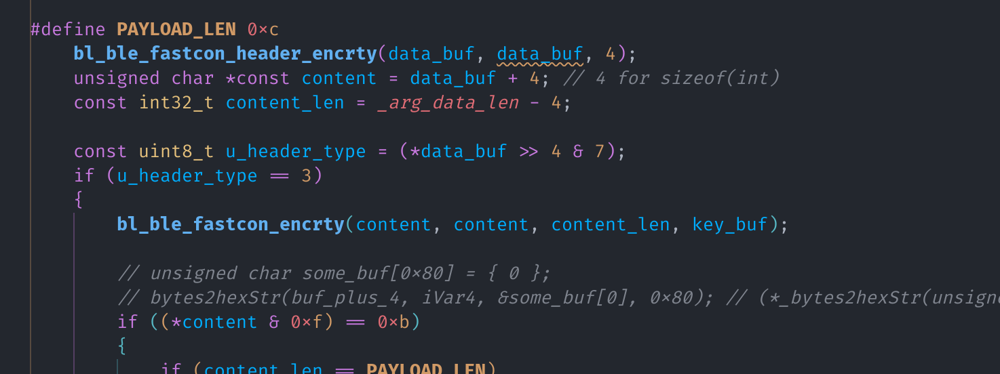
首先调用 bl_ble_fastcon_header_encrty 函数解密数据前 4 字节的头，第一个 byte 右移 4
位之后的低三位应该是 header type（也就是第 5, 6, 7 位）
如果 header type 是 1，则进入所需的 Scan Response 处理流程，我在代码中直接将其命名为
DeviceAnnouncement。
如果 header type 是 3，根据反编译结果，会调用 bl_ble_fastcon_encrty 函数解密剩下的数据，
并根据解密后的第一个 byte 判断内容类型，包括 TimerUploadResponse 和 HeartBeat。
似乎没有其他的 header type 了。
bl_ble_fastcon_header_encrty 与 bl_ble_fastcon_encrty 链接到标题
接下来需要逆向出 bl_ble_fastcon_header_encrty 和 bl_ble_fastcon_encrty 函数的逻辑。
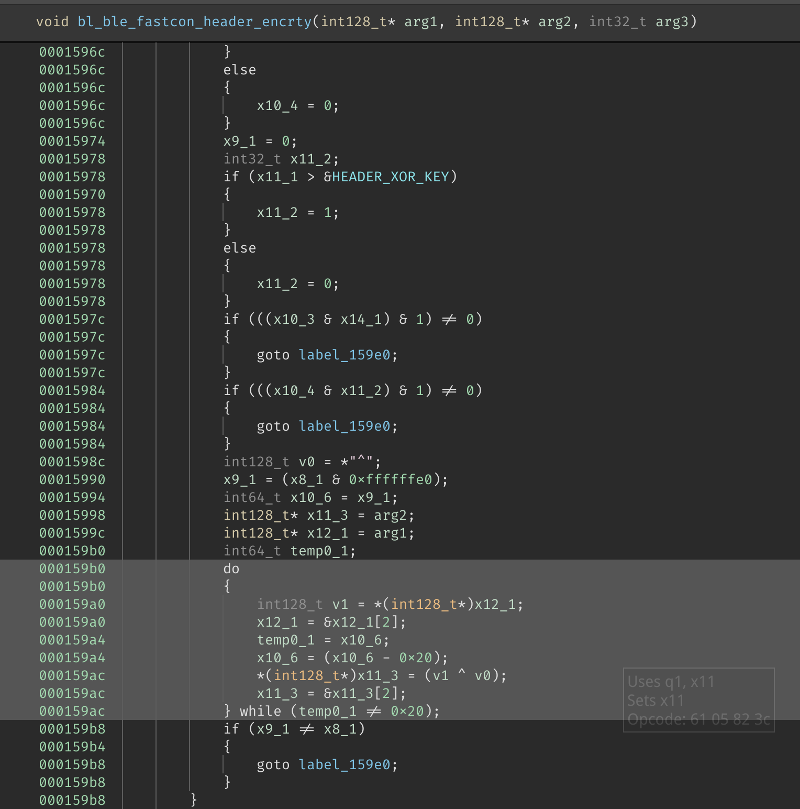
看到这里出现了 v 寄存器，于是合理猜测是一个 SIMD 优化过的循环。
因为在编译器进行 SIMD 优化时，不会假设「所有的数据均能被」 SIMD 指令处理。 因此在 SIMD 指令前后总会出现另一循环，用来处理剩余的数据，并且效果应与 SIMD 指令相同。
（所以只看另一部分非 SIMD 的循环，也能得到正确的结果）
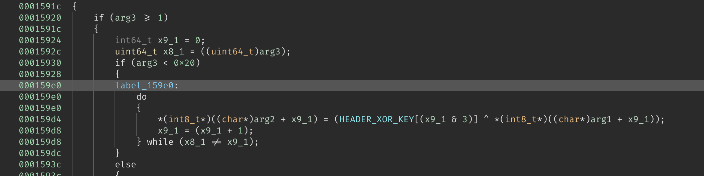
在这里，我看到了……
|
|
由此可知 x9_1 类似一个计数器，那么根据一般经验，x8_1 既然是要和 x9_1 比较的话，
它就应该是剩余（因为 SIMD 代码可能已经处理一部分了）数据的长度。
果不其然，在上面就有 uint64_t x8_1 = ((uint64_t)arg3); 这样的语句。
我已经知道函数的 arg1 的类型是 const u8 *，也就是输入数据，arg2 的类型是 u8 *，
也就是输出数据，那么就不难看出这段循环的作用了。
|
|
至此，这个函数逻辑就很清晰了，仅仅是一个简单的异或运算。
bl_ble_fastcon_encrty 链接到标题
有了上一函数的经验，这个函数就很简单了。
同样是一个 v 寄存器，代表着 SIMD 优化过的循环，同样是 goto 到了另一个 “平凡” 的循环。
|
|
稍微不同的是，这里我们没有 HEADER_XOR_KEY，而是有一个 arg4。
在不经意间翻看的时候，发现了 C++ 里才会有的 std:: 命名空间，这才发现
原来这个库是用 C++ 写的。
于是我尝试在 Binja 中显示函数 mangle 后的名字，发现是 _Z21bl_ble_fastcon_encrtyPhS_iS_，
那么：
|
|
我们就可以可靠地得知 arg4 的类型是 const u8 *，也就是解密所需的 key。
那么这个函数就也被成功逆向了。
|
|
Java 对应调用方的重新实现 链接到标题
在这种情况下，由于我的最终目标是写一个 Rust 库，所以现阶段需要做的就是直接将 Java 反编译后的代码使用 Rust 重新实现一下即可。
1. Java 方面的参数 链接到标题
接下来请欣赏反编译后的 Java 函数参数名：
|
|
看到这样的函数重载和参数，当时人就傻掉。仅有的方案就是一点一点用 rust 重写，
并无其他捷径。
于是决定跳过这段无聊的重写，直接关注 native 库的逆向过程。
（再次）逆向 native 库 链接到标题
整个 native 库四十多个 JNI 函数，在上文仅出现了一个。因为好戏还在后头：
就拿用于控制单个等开关的函数 singleOnOff 为例，从封装函数开始，到最终数据被广播出去：
|
|
其中涉及了三次 native 调用，那么就从第一个开始做吧。
1. package_device_control 链接到标题
看名字应该是用于 「打包设备控制指令」，首先打开 Binja，找到对应的 JNI 入口：
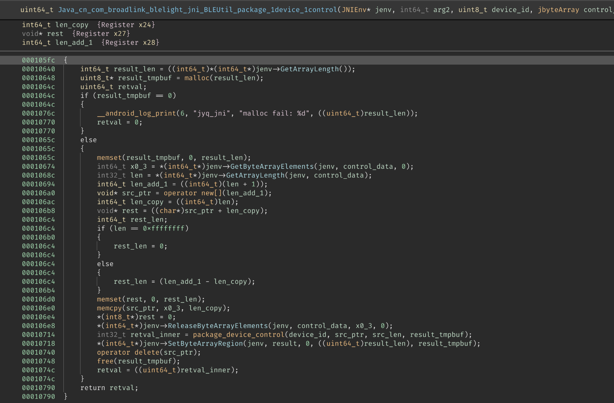
乍一看，这个函数怎么这么短？
仔细观察才发现这只是一个 wrapper，大概做的就是先 malloc 出一份工作用的 buffer，讲传入的 JByteArray
内容解包到 buffer 里，随后调用真正的函数，最后将 buffer 里的内容打包到返回用的 JByteArray 里。
并没有什么特别的地方，遂跳到真正的函数 package_device_control 去一探究竟：
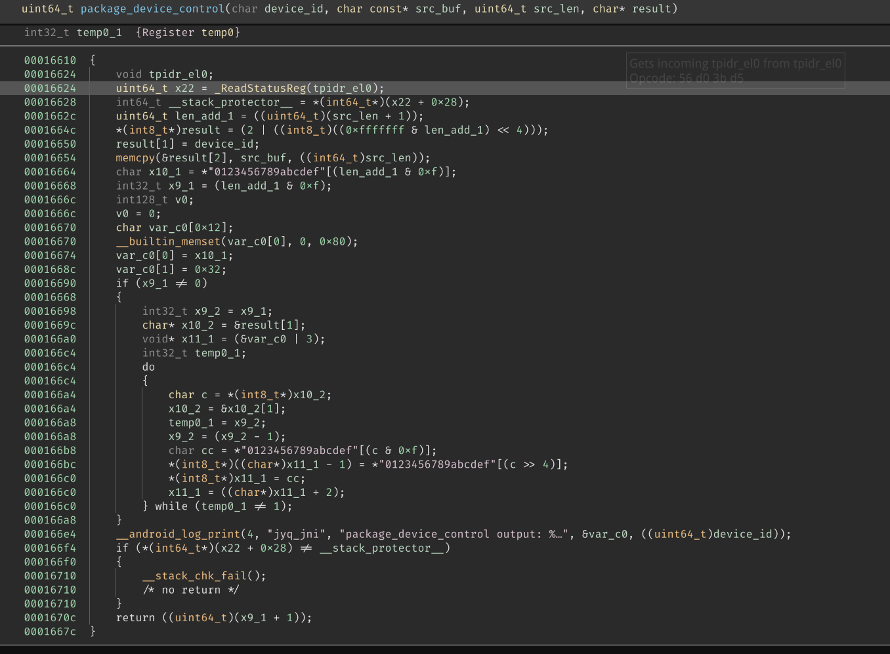
函数的开头和最后几行通常是 stack smashing protector，与我们无关，所以只需要关注中间的部分：
|
|
这段代码最后调用了 __android_log_print，那么参数 var_c0 就一定是某个字符串，看来看去，似乎这整个串
与我们的实际操作毫无关系，于是把代码扔到编辑器里，一个一个删变量，让 Language Server 的报错来帮忙：
最终一个个删完，只剩下了这四行代码：
|
|
看来这个 result 的第一个 byte 是长度 + 1 左移四位后与 2 取按位或，第二个 byte 是设备 id，后面的内容 就是我们传入的数据了。
（怎么这么简单？）
2. package_ble_fastcon_body 链接到标题
有了上个函数的 “经验”，我兴冲冲打开了这个函数体。
JNI 入口函数仍然是十分类似的 wrapper，首先 malloc 了一份 buffer，然后调用真正的函数，最后将 buffer
重新打包到返回用的 JByteArray 里，于是直接前往真正的函数体：package_ble_fastcon_body。
这个函数比上一个长很多，而且里面有很多的与上个函数内类似的 bytes-to-hex-string 代码：
|
|
在本函数体内，类似的代码出现了四次，其中两次循环后都跟有 __android_log_print，所以我大胆设想
这些代码都与实际操作无关。（另外两次为什么没 ）print 我暂且蒙在鼓里
为了方便，我制作了一个 header，里面包含一些常用的 typedef：
|
|
这样每次 copy 出来的代码就不用再改类型了，直接 include 头。
值得记录一下的是，Binary Ninja 将这个函数反编译成了这样：
|
|
经过一段时间的研究，我认为 var_100 的实际类型应该是 char[0x80]，而上面所有的赋值应该都是
对这个数组的赋值。
var_100 似乎是专门用来存放 hex-string 的。仍然与我们的操作无关，所以干脆全部删掉。去掉了所有
SIMD 指令后，我得到了这样的代码：
第一部分：
|
|
很明显是一些包头的赋值，不过为什么
第二部分：
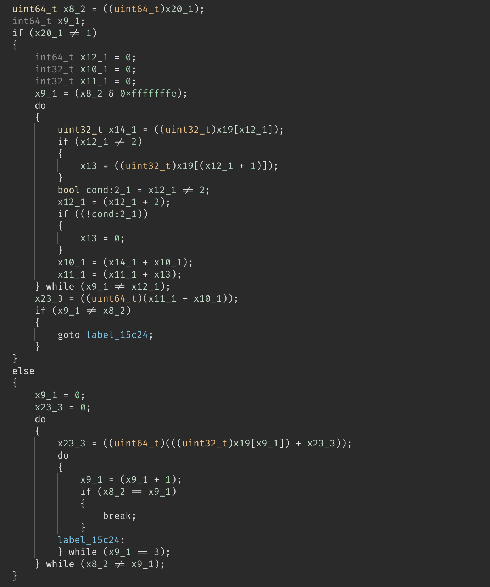
第三部分：
|
|
接下来工作的重点就是个第二部分了，在经过{数据测试，阅读 ASM，询问 ChatGPT}之后，我终于得到了
这样的结论：
- 第二部分其实就是一个 checksum，但由于
result[3]是 checksum 本身，所以在循环 sum 的时候跳过了index = 3
那么这个函数的逻辑就很清晰了：
|
|
3. get_rf_payload 链接到标题
万万想不到这个函数竟然是本期的主角，函数传入 addr 地址, addr_len 地址长度, data 数据, data_len
数据长度，最终将数据写如 result 返回结果。
首先映入眼帘的是两个 whitening_init 调用，看名字似乎是在初始化什么东西，然后是一个 operator new[]，
在这里申请了 0x12 + addr_len + data_len + 2 大小的内存。
这块内存最终被 copy 到了 result 内，合理猜测这就是所需的最终结果。
函数内部的逻辑很简单，看着反汇编就能把大概逻辑描述出来：
-
这一段是对申请后的内存进行初始化，似乎在
0x0f和0x10,0x11进行 hard-coded：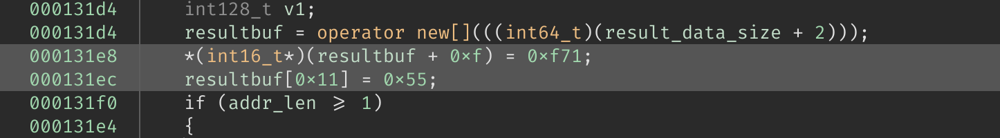
-
随后是一段带有 SIMD 优化的循环，我们不管 SIMD 部分，直接跳到
label_1320c：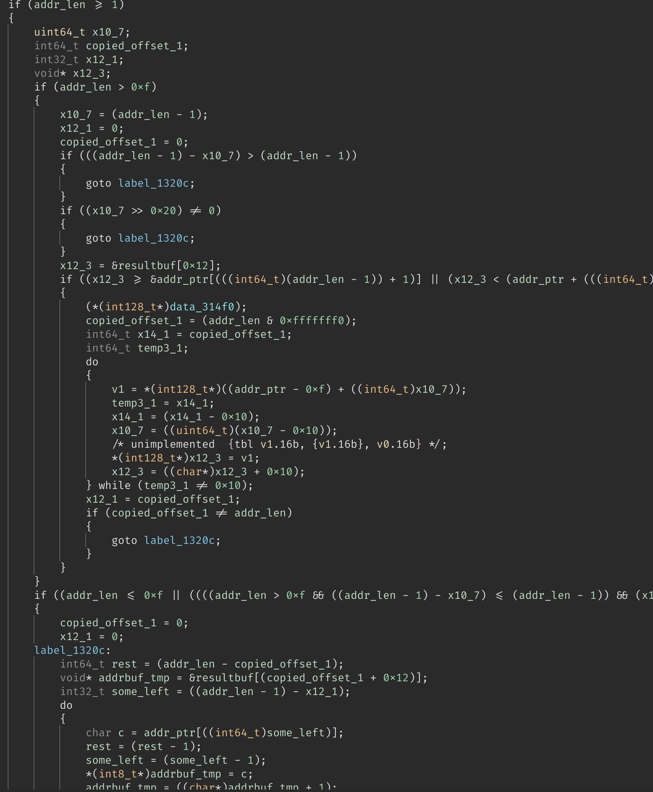
1 2 3 4 5 6 7 8 9 10 11 12label_1320c: int64_t rest = (addr_len - copied_offset_1); char* addrbuf_tmp = &resultbuf[(copied_offset_1 + 0x12)]; int32_t some_left = ((addr_len - 1) - x12_1); do { char c = addr_ptr[((int64_t)some_left)]; // c = addr[some_left] rest = (rest - 1); // rest-- some_left = (some_left - 1); // some_left-- *(int8_t*)addrbuf_tmp = c; // addrbuf_tmp[0] = c addrbuf_tmp = ((char*)addrbuf_tmp + 1); // addrbuf_tmp++ } while (rest != 0);不难看出这是对
addr的逆序拷贝，copied_offset_1和x12_1是用于记录在 SIMD 部分已经拷贝了多少字节，因为无需关心 SIMD 部分，所以直接把他当作 0 即可。这段代码把
addr复制到了resultbuf的0x12处。 -
接下来是对
data的拷贝，与上面不一样的是，这次的拷贝是正常顺序的：1 2 3 4 5 6 7 8 9 10 11 12 13 14label_13274: char* data_dst = &resultbuf[(x10_5 + (addr_len + 0x12))]; int64_t x9_1 = (data_len_copy - x10_5); char* data_src = &data_ptr[x10_5]; int64_t exit_cond; do { char c = *(int8_t*)data_src; data_src = &datasrcptr[1]; exit_cond = x9_1; x9_1 = (x9_1 - 1); *(int8_t*)data_dst = c; data_dst = &data_dst[1]; } while (exit_cond != 1);同样，
x10_5和data_len_copy是可以直接当作 0 的。值得注意的是，我们的
data_dst是从resultbuf的addr_len + 0x12开始的，这是因为 要将data拼接在addr之后。 -
随后是一个奇怪的循环：
1 2 3 4 5 6 7 8 9 10 11 12 13 14if ((addr_len + 3) >= 1) { // count down from addr_len + 3 uint64_t x27_1 = ((uint64_t)(addr_len + 3)); int8_t* x19_1 = &resultbuf[0xf]; uint64_t temp0_1; // exit condition do { temp0_1 = x27_1; x27_1 = (x27_1 - 1); *x19_1 = invert_8(*(int8_t*)x19_1); x19_1 = ((char*)x19_1 + 1); } while (temp0_1 != 1); }还记得之前硬编码的
0xf和0x10,0x11位置的数据吗，这段代码对此处从0xf开始的[3 + addr_len]个字节进行了 “invert”。说到这里，就不得不提到
invert_8这个函数：1 2 3 4 5 6 7 8 9 10 11 12 13 14 15 16 17 18 19 20 21 22uint64_t invert_8(int32_t arg1) int32_t arg1 {Register x0} lsl w11, w0, #0x5 ; w11 = w0 << 0x5 and w11, w11, #0x40 ; w11 = w11 & 0x40 lsr w10, w0, #0x2 ; w10 = w0 >> 0x2 bfi w11, w0, #0x7, #0x19 ; w11 = w11 | (w0 << 0x7) lsr w9, w0, #0x3 ; w9 = w0 >> 0x3 bfi w11, w10, #0x5, #0x1 ; w11 = w11 | (w10 << 0x5) ubfx w10, w0, #0x1, #0x7 ; w10 = w0 & 0x7f bfi w11, w9, #0x4, #0x1 ; w11 = w11 | (w9 << 0x4) ubfx w9, w0, #0x3, #0x5 ; w9 = w0 & 0x1f and w10, w10, #0x8 ; w10 = w10 & 0x8 ubfx w12, w0, #0x5, #0x3 ; w12 = w0 & 0x7 and w9, w9, #0x4 ; w9 = w9 & 0x4 orr w10, w11, w10 ; w10 = w11 | w10 orr w9, w10, w9 ; w9 = w10 | w9 and w10, w12, #0x2 ; w10 = w12 & 0x2 and w8, w0, #0xff ; w8 = w0 & 0xff orr w9, w9, w10 ; w9 = w9 | w10 orr w0, w9, w8, lsr #0x7 ; w0 = w9 | (w8 >> 0x7) ret ; return w0这个函数明明做的是
reverse，但是却叫invert，可想而知这位开发者可能在写的时候走神了：invert(0b00111111) = 0b11000000reverse(0b00111111) = 0b11111000
这个
invert_8函数下面还有一个invert_16，于是直接当作reverse了。 -
在 reverse 一部分 bytes 后，这个函数又计算了
addr和data的 CRC-16，将得到的 16 位 CRC 拼接在了最后（这就是为什么一开始申请内存的时候要加 2 了）：1 2 3 4const int32_t crc_start = 0x12 + addr_len + data_len; const int16_t crc = check_crc16(addr_ptr, addr_len, data_ptr, data_len); resultbuf[crc_start] = x0_5; // crc low byte resultbuf[crc_start + 1] = x0_5 >> 8; // crc high byte这个 CRC 函数十分 sus：他接受两个 buffer，所以我严重怀疑是什么自己的轮子：
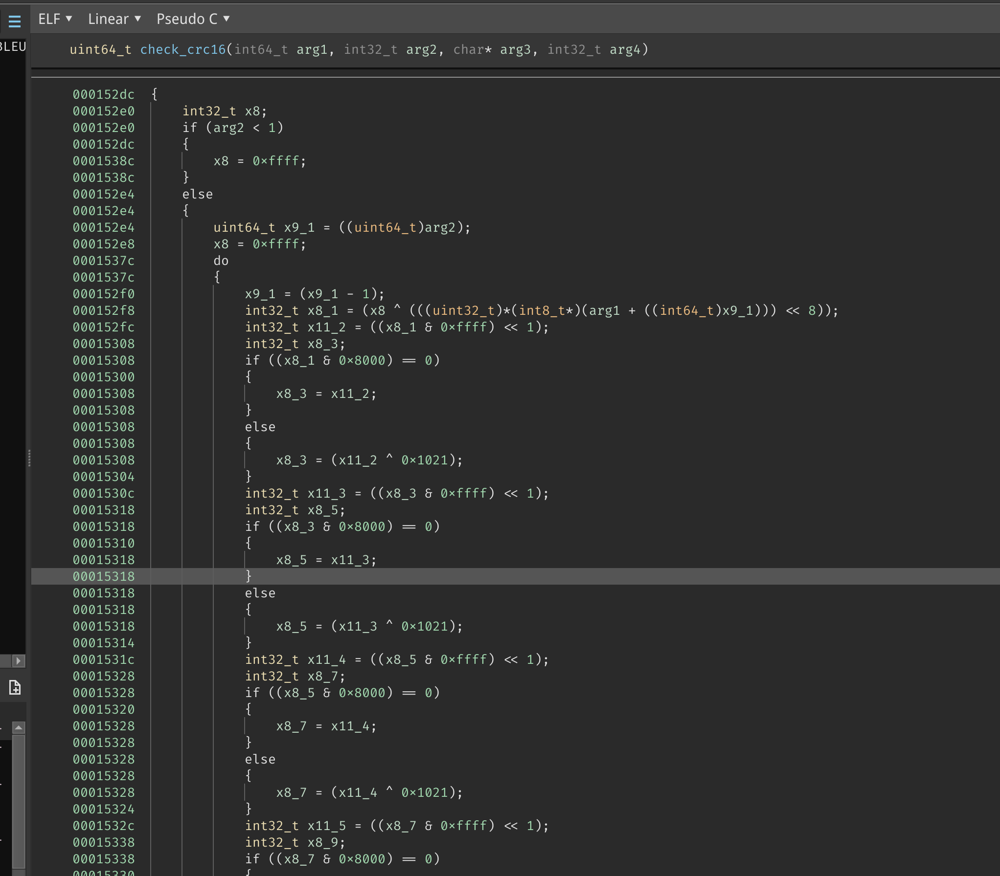
这是一坨什么大便，我不想看了。
经过千辛万苦地化简，我终于把这个函数化简成了这样：
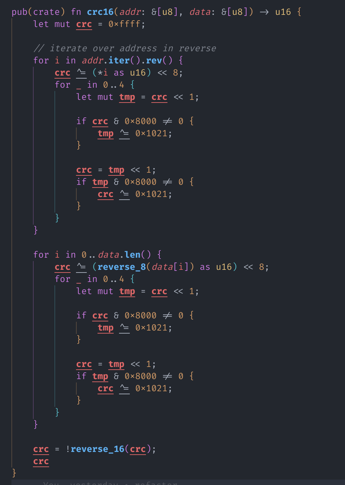
-
whitening_init
信号的白化是一种常见的信号处理技术，它的目的是将信号的频谱分布均匀化，使得信号的频谱 更加平滑，从而使得信号更加稳定。 — GitHub Copilot
这段代码（上文提到过）涉及到了两次
whitening_init调用和一次whitening_encode：1 2 3 4 5 6 7whitening_ctx_t var_88; // 感觉像是一个 struct，但是被优化掉了 whitening_ctx_t var_a8; whitening_init(0x25, &var_88); whitening_init(0x3f, &var_a8); // 在计算好 CRC 之后 whitenging_encode(resultbuf, (result_data_size + 2), &var_88);很有意思的是，
var_a8从来没有使用过，这个变量是不是多余的呢？这就要去看看
whitening_init有没有副作用了：1 2 3 4 5 6 7 8 9 10 11 12 13 14 15 16 17 18 19 20 21 22 23 24 25 26 27 28; whitening_ctx_t 是目前还不知道的一个 struct ; void whitening_init(int64_t arg1, whitening_ctx_t* arg2) ; int64_t arg1 {Register x0} ; whitening_ctx_t* arg2 {Register x1} ; 这两行把 data_31ac0 加载到 q0 ; 在 ARM 中，q0 寄存器是一个 128 位的寄存器，用于在 SIMD 指令中存储数据 ; 我们这里的 data_31ac0 其实就是 [5, 4, 3, 2] 四个 32 位的整数 adrp x8, 0x31000 ldr q0, [x8, #0xac0] {data_31ac0} dup v1.4s, w0 ; v1 = [arg1, arg1, arg1, arg1] orr w8, wzr, #0x1 ; w8 = 0x1 str w8, [x1] {0x1} ; 将 w8 存入 x1 指向的内存（0x1 是什么我不知道） neg v0.4s, v0.4s ; v0 = ~v0 ushl v0.4s, v1.4s, v0.4s ; v0 = v0 << v1 movi v1.4s, #0x1 ; v1 = [1, 1, 1, 1] ubfx w8, w0, #0x1, #0x1 ; w8 = (w0 >> 0x1) & 0x1 and w9, w0, #0x1 ; w9 = w0 & 0x1 and v0.16b, v0.16b, v1.16b ; v0 = v0 & v1 按位与 stur q0, [x1, #0x4] ; [x1, #0x4] = v0 stp w8, w9, [x1, #0x14] ; [x1] = w8, [x1, #0x8] = w9 ; 拜拜～～～ ret值得注意的是，这个先取反再左移的操作，在实际情况中其实就是右移……我被这个问题困扰了很久。 最终甚至还在 Android 上挂了 lldb 调试，才发现了这个问题：
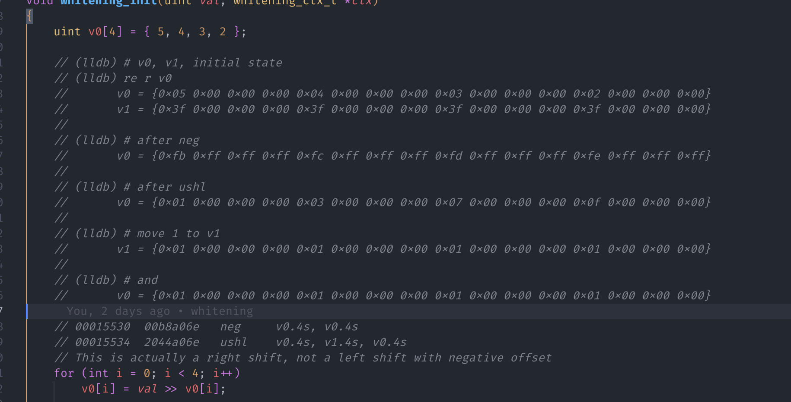
接下来的步骤就是将其翻译为 Rust：
1 2 3 4 5 6 7 8 9 10 11 12 13 14 15 16 17 18 19 20 21 22#[derive(Debug, Clone, Copy, Default)] pub(crate) struct WhiteningContext { // 我完全不知道这些字段是什么意思，所以直接用偏移量作为字段名了 f_0x0: u32, f_0x4: u32, f_0x8: u32, f_0xc: u32, f_0x10: u32, f_0x14: u32, f_0x18: u32, } pub(crate) fn whitening_init(val: u32, ctx: &mut WhiteningContext) { let v0 = [(val >> 5), (val >> 4), (val >> 3), (val >> 2)]; ctx.f_0x0 = 1; ctx.f_0x4 = v0[0] & 1; ctx.f_0x8 = v0[1] & 1; ctx.f_0xc = v0[2] & 1; ctx.f_0x10 = v0[3] & 1; ctx.f_0x14 = (val >> 1) & 1; ctx.f_0x18 = val & 1; } -
whitening_encode
- 好消息：这是我们最后一个函数了！
- 好消息：这个函数逻辑非常简单，没有 SIMD，没有怪异的位运算
- 好消息：这个函数里面就一个循环，每次循环更新 data 内的一个字节，并且更新 ctx
- 好消息：直接从 Binary Ninja 中复制出代码进行翻译即可
甚至没有什么值得说的：
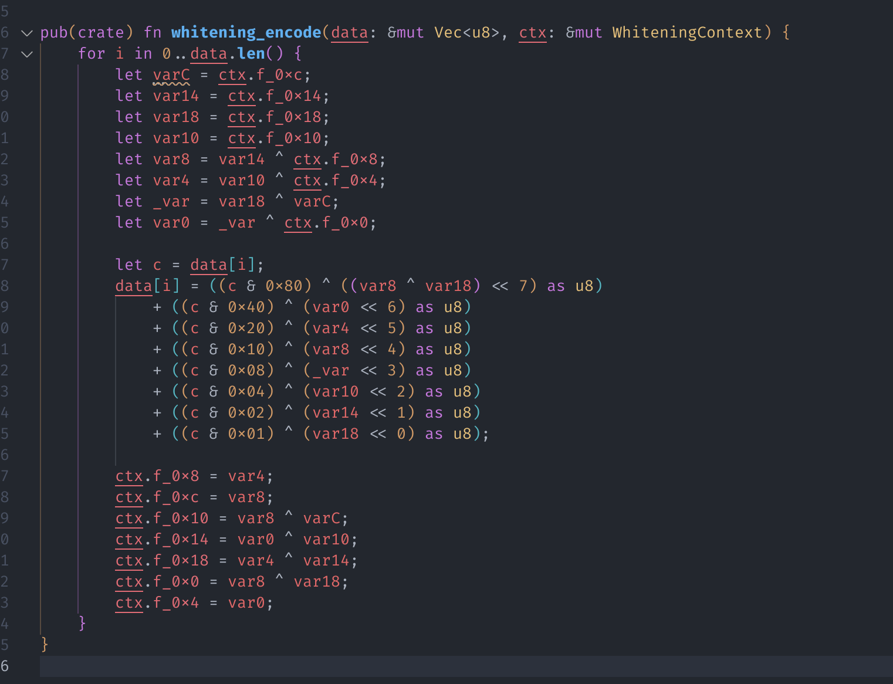
至此，我就完成了所需 native 函数的逆向，接下来就是将其整合并重构成一个看起来舒服的 Rust 库了。
在下一篇文章中，我大概会介绍 Fastcon 的大致逻辑。
所以，晚安～